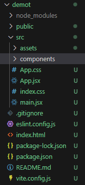
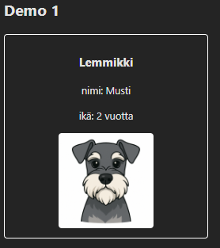

React-demoja
Demo 1
Tämä demo käy läpi Full Stack open-kurssin osan 1 kohdan Reactin alkeet.
Projektin luonti
Tehdään Github-repon sisälle projektikansio demoille. Neljä demo tulevat kaikki tämän saman React-projektin sisälle. Avaa konsoli repon juurihakemistossa ja aja seuraava projektin luontikäsky:
npm create vite@latest demot -- --template react
Tämän jälkeen siirrytään kansioon ja käynnistetään reactin development server:
cd demot npm install npm run dev
Lähdekooditiedostot ovat src-kansiossa. App.jsx sisältää App-komponentin jonka sisälle teemme demojen tehtävät. Lisää alikansio components alikomponenteille.

node_modules-kansio sisältää Reactin asennettuja kirjastoja ja sitä ei haluta mukaan GitHub-repoon. Lisätään repon juurihakemistoon .gitignore-tiedosto:
node_modules
Kun olet käynnistänyt development serverin voit avata selaimessa osoitteen http://localhost:5173/.
Muutetaan App-komponentti yksinkertaisemmaksi:
import { useState } from 'react'
import './App.css'
function App() {
return (
<>
<div className="App">
<header className="App-header">
<h1>React demot</h1>
</header>
</div>
</>
)
}
export default App
Muokkaa myös App.css-tiedostoa:
.App-header {
background-color: white;
color: black;
text-align: center;
width: 100%;
}
.App {
width: 800px;
}
body {
place-items: start;
}
Muuttujat
Reactissa muuttujat esitellään JavaScriptin tapaan. Kun viittaat muuttujaan return-osassa muuttuja ympäröidään aaltosuluilla.
function App() {
const name = "Musti";
const age = 10;
return (
<>
<div className="App">
<header className="App-header">
<h1>React demot</h1>
</header>
<div className="App-body">
<h2>Demo 1</h2>
<p>Lemmikin nimi on {name} ja se on {age} vuotta vanha.</p>
</div>
</div>
</>
)
}
React-komponentti
Yleensä halutaan tehdä pienempiä komponentteja joita kutsutaan esimerkiksi App.jsx-tiedostossa. Komponentti tulee tuoda (import) sitä käyttävässä komponentissa.
- Tee kansio components ja lisää sinne tiedosto Pet.jsx
- Tallenna kuva lemmikistä assets-kansioon.
{kind=link}
import imgPet from '../assets/demo_pet.png'
const Pet = () => {
const name = "Musti";
const age = 10;
return (
<div className='pet'>
<h3>Lemmikki</h3>
<p>nimi: {name}</p>
<p>ikä: {age} vuotta</p>
<img className="image" src={imgPet} alt="Kuva lemmikistä" />
</div>
);
};
export default Pet;
App.jsx-tiedostolla tuodaan komponentti mukaan:
import Pet from './components/Pet.jsx'
Kutsutaan App.jsx-tiedostolla return-osassa Pet-komponenttia:
<div className="App-body"> <h2>Demo 1</h2> <Pet /> </div>
Tietojen välitys - props

Äskeinen komponentti tulostaa aina samat tiedot. Toimivampi komponentti saisi tiedot syötteenä ja osaisi tulostaa lemmikin tiedot näkyviin. Annetaan seuravaksi Pets-komponentille parametrit eli propsit syötteenä. Muuta App.jsx-tiedostoa seuraavasti:
<Pet name="Musti" age="2" />
Pet.jsx-tiedostossa parametri propsin avulla voidaan tulostaa lemmikin tiedot:
const Pet = (props) => {
return (
<div className='pet'>
<h3>Lemmikki</h3>
<p>nimi: {props.name}</p>
<p>ikä: {props.age} vuotta</p>
<img className="image" src={imgPet} alt="Kuva lemmikistä" />
</div>
);
};
props on olio joka voidaan purkaa osiksi aaltosulkujen avulla. Usein on selkeämpää käyttää komponentilla muuttujia kuin props-oliota:
const Pet = ({name, age}) => {
return (
<div className='pet'>
<h3>Lemmikki</h3>
<p>nimi: {name}</p>
<p>ikä: {age} vuotta</p>
<img className="image" src={imgPet} alt="Kuva lemmikistä" />
</div>
);
};
Olio
Komponentille välitettävä tieto on usein olio jossa on sisällä erilaisia muuttujia. App.jsx lähettääkin seuraavaksi komponentille olion. Määrittele ensin App.jsx-tiedostossa olio näin:
import imgPet from './assets/demo_pet.png'
const pet1 = {
name: "Musti",
age: 2,
img: imgPet
}
Lisätään tiedostoon Pet.jsx toinen komponentti PetObject. Nyt annetaan syötteenä olio.
const PetObject = ({pet}) => {
return (
<div className='pet'>
<h3>{pet.name}</h3>
<p>ikä: {pet.age} vuotta</p>
<img className="image" src={pet.img} alt="Kuva lemmikistä" />
</div>
);
};
Kun Pet.jsx-tiedosto sisältääkin kaksi komponenttia niin exportataan ne molemmat:
export {Pet, PetObject};
App.jsx-tiedostolla importataan Pet.jsx-tiedostosta kaksi komponenttia, muuta import-lausetta näin:
import {Pet, PetObject} from './components/Pet.jsx'
App.jsx kutsuu nyt PetObject-komponenttia pet1-oliolla:
<PetObject pet={pet1} />
Map ja taulukollinen olioita
Käytetyt kuvat (kuva1, kuva2, kuva3){kind=link}
{kind=link}
import imgPet from './assets/demo_pet.png'
import imgPet2 from './assets/demo_pet2.png'
import imgPet3 from './assets/demo_pet3.png'
const pet1 = {
name: "Milo",
age: 2,
img: imgPet
}
const pet2 = {
name: "Lucy",
age: 2,
img: imgPet
}
const pet3 = {
name: "Bella",
age: 3,
img: imgPet3
}
const pet4 = {
name: "Willow",
age: 7,
img: imgPet2
}
const pets = [pet1, pet2, pet3, pet4];
Taulukon käsittelyssä
const Pets = ({pets}) => {
return (
<div className='pets'>
{pets.map((pet, index) => (
<PetObject key={index} pet={pet} />
))}
</div>
);
};